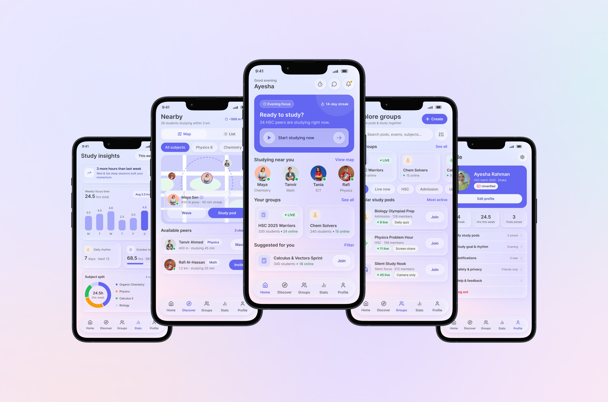
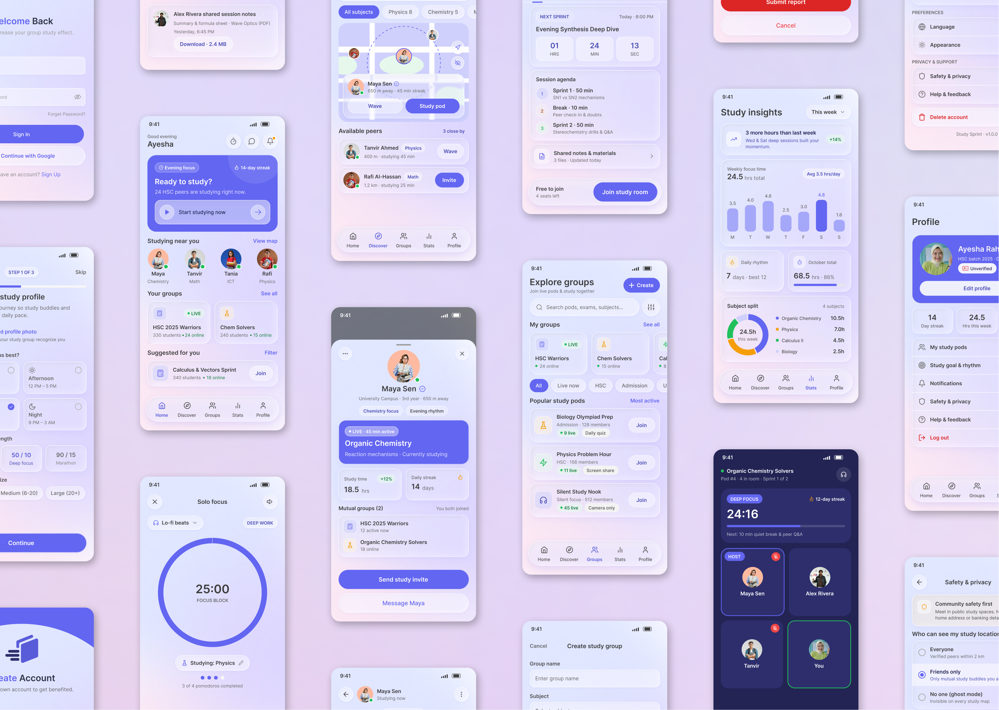
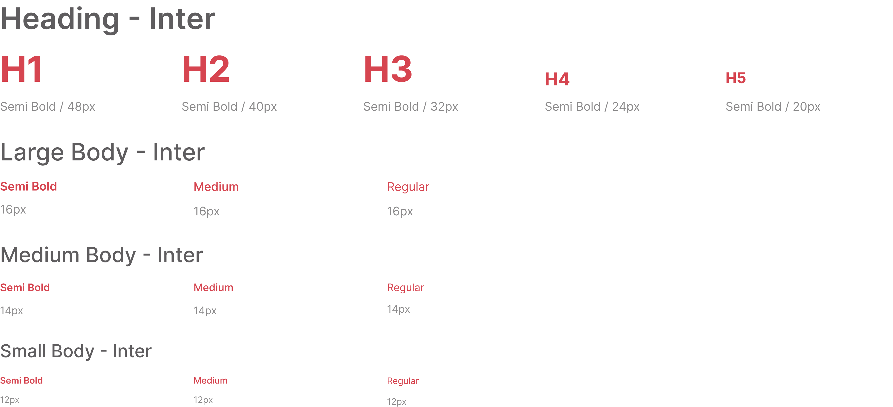
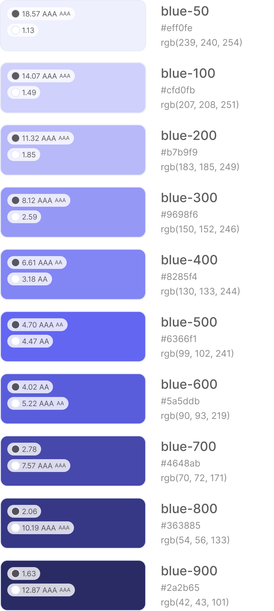
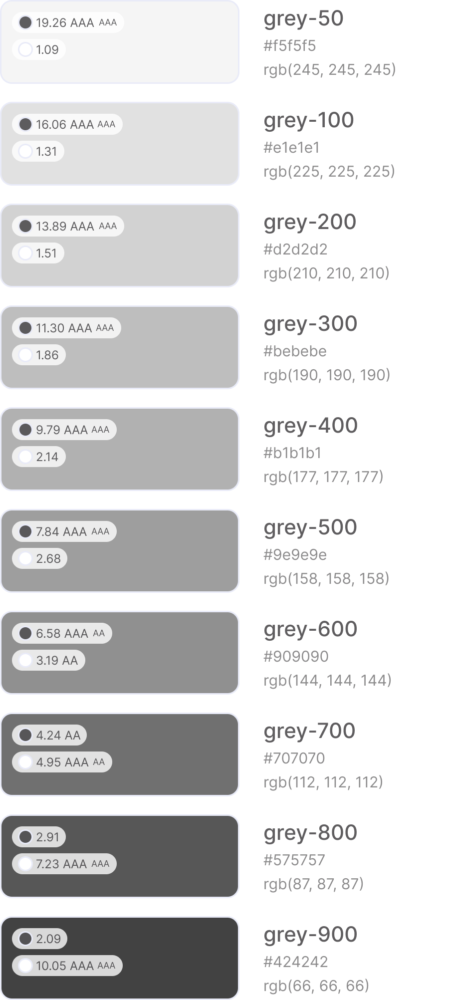
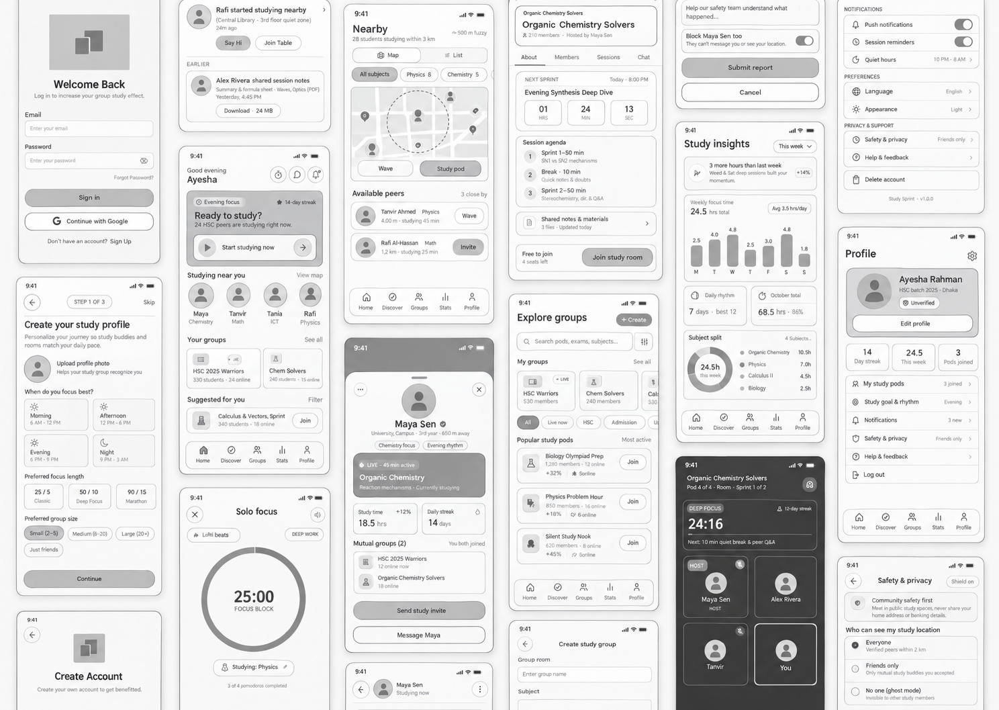
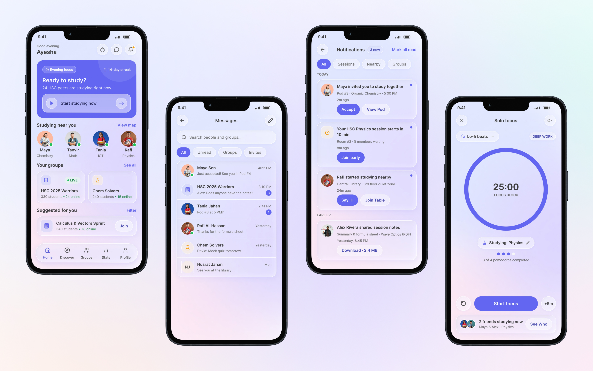
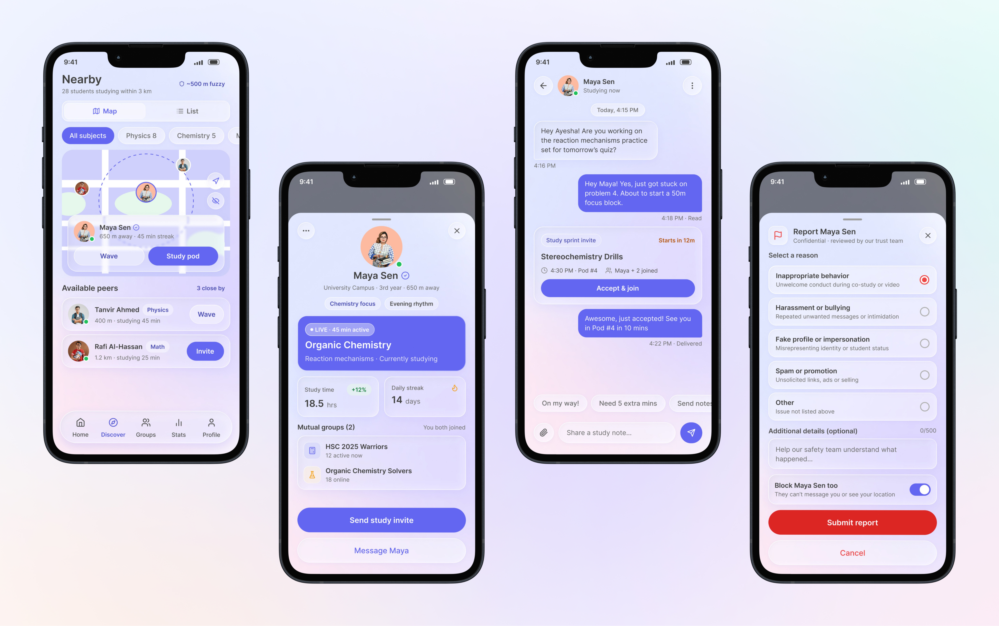
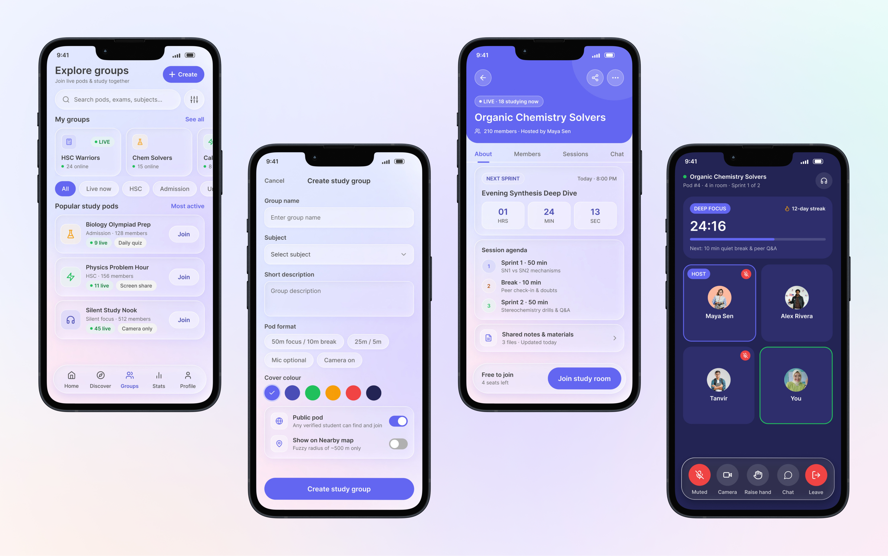
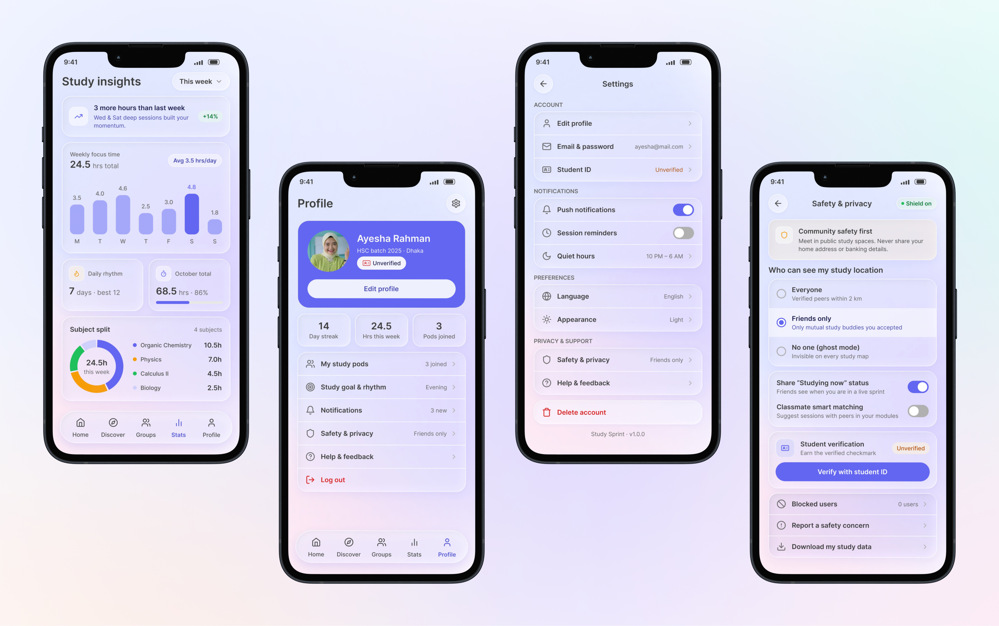

Many students in Bangladesh study alone at home or in noisy Messenger and WhatsApp groups. Motivation drops, good study partners are hard to find, and sharing location with strangers feels unsafe.
The challenge was to create an app that could:
How might we help students study together, stay consistent, and stay safe, without turning study time into another distracting social feed?

The proposed solution was a mobile app that brings study partners, live groups, and focus tools into one calm space, while keeping location and safety under the student's control.
Key solution areas included:
This approach lets students feel supported by a study community first, then gives them the tools to stay consistent and safe on their own terms.
Understand how students study today, and what keeps them from studying with others.
Map onboarding, the five main tabs, and the journey from finding a peer to studying together.
Define typography, colors, spacing, glass styles, components, and states for the whole app.
Structure each screen, navigation, and content hierarchy before any visual styling.
Create polished screens with glass cards, a floating navigation dock, and an indigo-accented identity.
Connect the main screens and refine navigation, interactions, and the overall experience.
The research focused on understanding what students expect from an app for studying together.
Students stay more consistent when they can see others studying at the same time, even without talking.
Students share location only when it is approximate, temporary, and easy to switch off.
Joining a study group must take only a few taps. Long forms and unclear groups make students give up.
Timers and quiet rooms work better than feeds and busy chats when students are trying to study.
Streaks and weekly totals motivate students, as long as they feel encouraging rather than judging.
Report and block need to be reachable from profiles and chats, without searching through settings.
Rather than comparing against similar products, I reviewed the apps students already use to study together or stay focused, and checked which needs each of them actually meets.
| Criteria | Messenger | Discord | Forest | Study Sprint |
|---|---|---|---|---|
| Group Video Rooms | Yes | Yes | No | Yes |
| Nearby Study Partners | No | No | No | Yes |
| Focus Timer | No | No | Yes | Yes |
| Study Progress Stats | No | No | Yes | Yes |
| Student Verification | No | No | No | Yes |
| Built for Studying | No | No | Yes | Yes |
The persona represents a typical Study Sprint student who is preparing for admission tests and wants steady study partners. It helps define the motivations, expectations, and pain points that shaped the app.
Arif is preparing for university admission tests after HSC. He studies mostly at home after coaching and wants regular study partners, but his friends live far away and online groups are full of distractions.
The empathy map captures Arif's thoughts, words, behaviors, and emotions while looking for study partners and trying to stay consistent. It shows where the app can replace scattered chats with one focused space.
The typography system was designed to feel friendly, calm, and easy to read on a small phone screen. Inter is used throughout, with clear weight and size differences for headings, card details, and body text. Large numerals make timers and stats easy to read at a glance.

The Study Sprint color system pairs a confident indigo with soft greys. Indigo marks actions, active states, and key highlights, while light greys keep cards, forms, and text clean. Glass layers sit over a soft lavender gradient to keep the interface calm.


The wireframing stage defined the structure of the home, discover, groups, stats, and profile tabs. It set the shared bottom navigation, card layouts, filters, and the chat and live room flows before any visual styling was applied.

The final interface brings together glass cards, a floating navigation dock, and an indigo-accented identity to make the app feel calm, modern, and focused.

Home shows who is studying nearby, your groups, and a one-tap start for studying. Messages, notifications, and the Solo Focus timer sit one tap away in the header, so students can move from planning to studying quickly.

The Nearby map shows an approximate 500 m zone, with locate and Ghost mode buttons always on the map. Peer profiles show mutual groups, chats carry study invites, and Report and Block are one tap from both.

My groups sit on top of the Groups tab, with new pods to explore below. A pod page shows the next sprint countdown and agenda, and the dark live room keeps mic, camera, and raise hand within thumb reach.

Stats turn study time into a weekly chart, a streak, and a subject split. Profile, settings, and Safety & Privacy keep verification and location visibility in the student's hands, with plain labels for every choice.
Clear limits on location, like an approximate zone and a Ghost mode, made the Nearby idea feel safe enough to use.
Translucent cards only worked once inner elements stayed flat and text contrast was checked on every screen.
Keeping each screen simple, with large timer numerals and calm colors, helped the app support study instead of distracting from it.
If Study Sprint made you curious about how it was designed, or you're working on something that could use a similar hand - I'd love to hear from you.